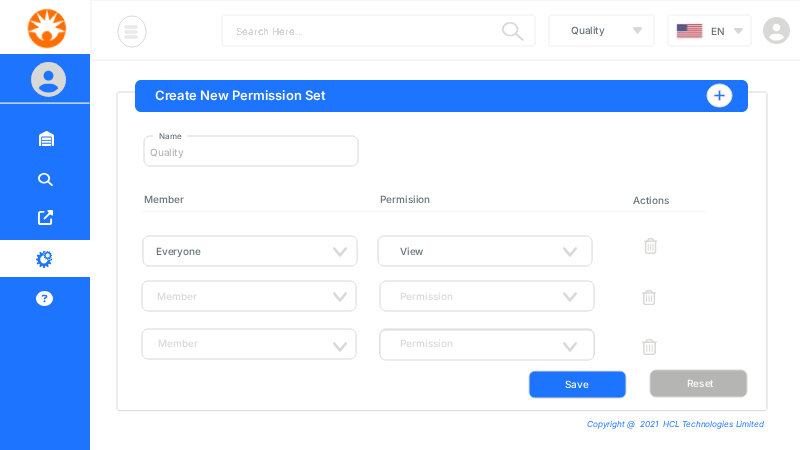
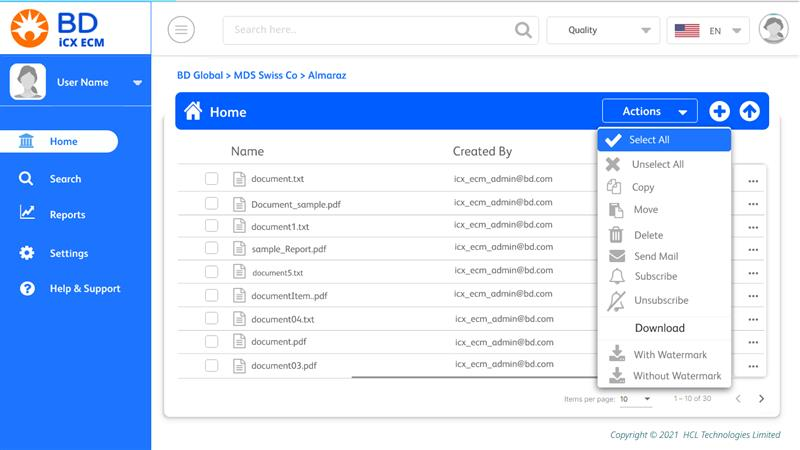
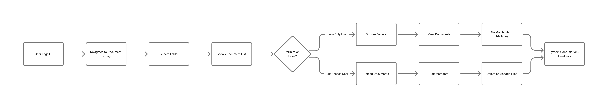

Becton Dickinson — ICX Quality Document Portal
Designing permission-based document management experiences for an internal healthcare quality portal. The work focused on helping users configure access, get started, find documents, and perform document-related actions through clearer workflows.
01 — Product Overview
The ICX Quality Document Portal was an internal platform designed to support quality document management within Becton Dickinson's enterprise environment.
My design work covered key parts of the user journey: configuring permissions, setting up access, understanding the portal for the first time, finding relevant documents, and taking actions on those documents.
Since this was an internal, login-protected product, the screens and workflows are presented here as a portfolio case study rather than through a public product link.
Permissions
Designing how access levels and document permissions are configured and communicated.
Setup & First-time Use
Helping users understand the portal and get started with the required setup.
Document Management
Supporting document discovery and the actions users need to perform on documents.
02 — The Design Problem
The challenge was to make an enterprise document portal easier to understand and use across different stages of the document-management journey.
The design needed to address:
- Making permission settings and access levels understandable.
- Creating a clear setup and onboarding experience.
- Helping first-time users understand where to begin.
- Making document discovery easier to navigate.
- Making available document actions clear to users.
03 — My Role & Responsibilities
I worked on the user experience and interface design for the key workflows within the ICX Quality Document Portal.
- Designed permission-related experiences and access workflows.
- Designed the setup experience.
- Designed first-time user experiences.
- Worked on document discovery and navigation.
- Designed document-related actions and interaction patterns.
- Translated requirements into user flows and interface designs.
- Worked on design iterations and stakeholder feedback.
- Presented design solutions for client review and approval.
04 — Design Goals
Clarify Access
Make permissions and access-related information easier to understand.
Simplify Setup
Provide a clear starting point for users configuring and accessing the portal.
Improve Discovery
Help users navigate the portal and locate the documents they need.
Clarify Actions
Make document-related actions easier to identify and understand.
05 — End-to-End User Journey
The design work covered multiple stages of the portal experience, from initial access through document interaction.
06 — Design Approach
Requirements
Understand the product requirements, user needs, and key portal workflows.
User Flows
Organize the key journeys across permissions, setup, document discovery, and actions.
Interface Design
Translate workflow requirements into clear interface layouts and interaction patterns.
Review & Iteration
Refine the designs based on stakeholder feedback and prepare the approved release experience.
07 — Permissions & Access Management
Permission management was an important part of the portal. The design needed to communicate access levels and make the relationship between permissions and available actions easier to understand.
Design Focus
- Present permission-related information clearly.
- Make access configuration easier to understand.
- Connect user permissions with the actions available to them.
- Maintain clarity within a document-heavy interface.

Permission Sets — Access Configuration

Permission-Based Document Actions
08 — Setup & First-time User Experience
I also worked on the setup and first-time use experiences. These parts of the journey were intended to help users understand how to begin using the portal and move into their document-related tasks.
Design considerations
- Provide a clear starting point for users.
- Organize setup information into understandable steps.
- Make the transition into the portal experience clearer.
- Maintain consistency with the wider application interface.
The detailed setup and first-time use screens are not included in this visual section. The scope is described here without recreating or inventing additional screenshots.
09 — Finding Documents
Document discovery was another important part of the experience. The design work focused on helping users navigate the portal and locate the documents relevant to their tasks.
Design Focus
- Make document-related information easier to scan.
- Support clearer navigation through document areas.
- Maintain consistency across document-related screens.
10 — Acting on Documents
Beyond finding documents, users needed to understand which actions were available to them. I worked on document action experiences and permission-based interaction patterns.
Design Focus
- Make available document actions easier to identify.
- Improve clarity of action placement and presentation.
- Consider the relationship between permissions and actions.
- Keep document interactions consistent across the portal.
11 — Key Design Decisions
01. Make Permissions Understandable
Challenge: Users needed to understand access levels and the actions available within the portal.
Design direction: Give permission-related information and available actions clearer visibility.
02. Create a Clear Starting Experience
Challenge: Users needed a clear way to get started with the portal.
Design direction: Structure setup and first-time use experiences around a more understandable journey.
03. Support Document Discovery
Challenge: Users needed to navigate the portal to find relevant documents.
Design direction: Focus on clearer document organization and navigation.
04. Connect Permissions to Actions
Challenge: Document actions needed to be understood in the context of user access.
Design direction: Design action experiences with permission visibility and clarity in mind.
12 — Design Trade-offs
Information Density vs. Clarity
An enterprise document portal needs to present useful information without making the interface difficult to scan. The design direction focused on organizing information clearly.
Permission Visibility vs. Simplicity
Access information needed to be understandable while keeping the interface focused. The design considered the visibility of permissions and the actions associated with them.
13 — Permission-Based Document Management Flow
This visual represents the permission-based document management workflow at a high level.

Reconstructed workflow representation for portfolio presentation. It is not presented as a production screenshot.
14 — Selected Design Screens
The following selected screens demonstrate parts of the permission and document-action experiences. These designs received client approval for the planned release version.
Permission Sets & Access Configuration
Document Action Toolbar
Visuals are shared for portfolio demonstration. The portal itself was internal and login-protected.
15 — Outcome & Project Status
Designed Workflows
Completed design work across permissions, setup, first-time use, document discovery, and document actions.
Client Approval
The designs were approved by the client for the planned release version.
Release Preparation
The approved design work was intended for the product's release version.
Important: Approved, Not Released
Although the designs received client approval for the release version, the project was terminated before the product was released.
Therefore, these designs were not launched into production. No live-product impact or post-launch metrics are claimed in this case study.
The portal was an internal product behind employee login, so there is no public product URL.
16 — What I Would Improve Next
If the project had continued beyond the design approval stage, I would have focused on validating the experience with users in the implemented product and refining it based on actual usage.
- Validate the implemented permission workflows with users.
- Observe how users navigate and find documents.
- Review the clarity of document actions in real usage.
- Identify friction in setup and first-time use.
- Use post-release feedback to prioritize further improvements.
17 — My Contribution
My contribution focused on translating enterprise document-management requirements into clear user experiences and interface designs.
- Designed permissions and access-related experiences.
- Designed setup and first-time use workflows.
- Worked on finding and navigating documents.
- Designed document-related actions.
- Developed interface designs and interaction patterns.
- Refined design solutions through review and feedback.
- Presented designs for client approval.